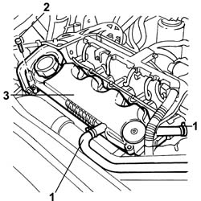

1016A20 Single TAPPET COVER - R.R. and Replace gasket
- Path
- Procedures > 10 ENGINE > 1016 CYLINDER HEAD(S) > 1016A TAPPET COVERS > 1016A20 Single TAPPET COVER - R.R. and Replace gasket
- Kind
- repair procedure (removal / refitting; the operation number is the code)
- Applies to
- engines: 2.4 JTD 10V; all production periods
- Interactive page
- https://sloeber94.github.io/elrnDB-lThss/en/#/75522
Applies to: engines: 2.4 JTD 10V; all production periods
 Removing
Removing
 Refitting
RefittingSee in Op. 7040D50 ENGINE COMPARTMENT UPPER SOUND INSULATION SHIELD - R.R.
See in Op. 1016A10 SOUND-PROOFING COVER - R.R.
See in Op. 1064A27 PIPE between vacuum reservoir and actuator control solenoid valve - R.R.
1. Disconnect the two oil vapour pipes from the tappet cover.
2. Undo the fixing bolts.
3. Remove the tappet cover.

Applies to: engines: 2.4 JTD 10V; all production periods
Refitting
Removing- Fit the tappet cover on the cylinder head.
- Tighten the bolts fixing the tappet cover to torque.
 | Value - daNm | Fastening | Component | Ø |
|---|---|---|---|---|
. | 1 | Bolts | CAM COVER | M6 |
- Connect the oil vapour recovery pipes to the tappet cover.
See in Op. 1064A27 PIPE between vacuum reservoir and actuator control solenoid valve - R.R.
See in Op. 1016A10 SOUND-PROOFING COVER - R.R.
See in Op. 7040D50 ENGINE COMPARTMENT UPPER SOUND INSULATION SHIELD - R.R.
Topics linked from this page (3)
- 1016A10 SOUND-PROOFING COVER - R.R.
- 1064A27 PIPE between vacuum reservoir and actuator control solenoid valve - R.R.
- 7040D50 ENGINE COMPARTMENT UPPER SOUND INSULATION SHIELD - R.R.